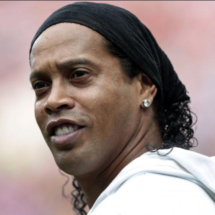
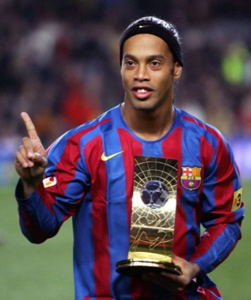

Qui est Ronaldinho ?

né le 21 mars 1980 à Porto Alegre, est l’un des joueurs les plus spectaculaires de l’histoire du football, célèbre pour sa créativité, son sourire et son Ballon d'Or 2005. Même après sa retraite officielle en 2018, il continue de faire parler de lui, notamment en retrouvant le terrain à 46 ans avec Ravenne en Serie C en novembre 2026.
Ce que tu peux découvrir sur Ronaldinho !

Sur ce site, vous pourrez découvrir le parcours de Ronaldinho, ses plus grands exploits et les moments marquants de sa carrière. Parcourez aussi sa galerie, les actualités, ses réseaux sociaux et d’autres sites de fans pour en apprendre davantage sur cette légende du football.
Pourquoi je l'ai choisi ?
Ronaldinho représente pour moi plus qu'un simple joueur de football. C'est un symbole de joie, de créativité et d'inspiration. Sa manière unique de jouer et son charisme ont su captiver les cœurs du monde entier.